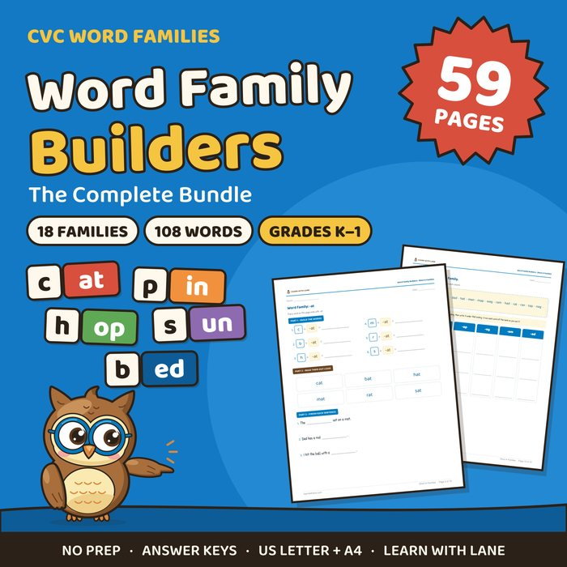
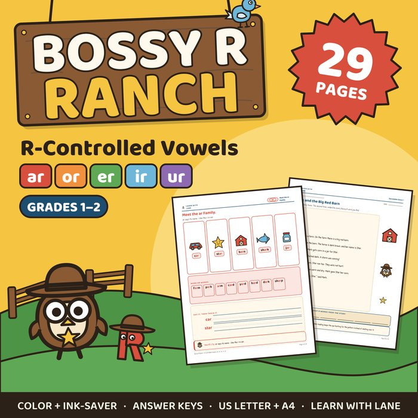
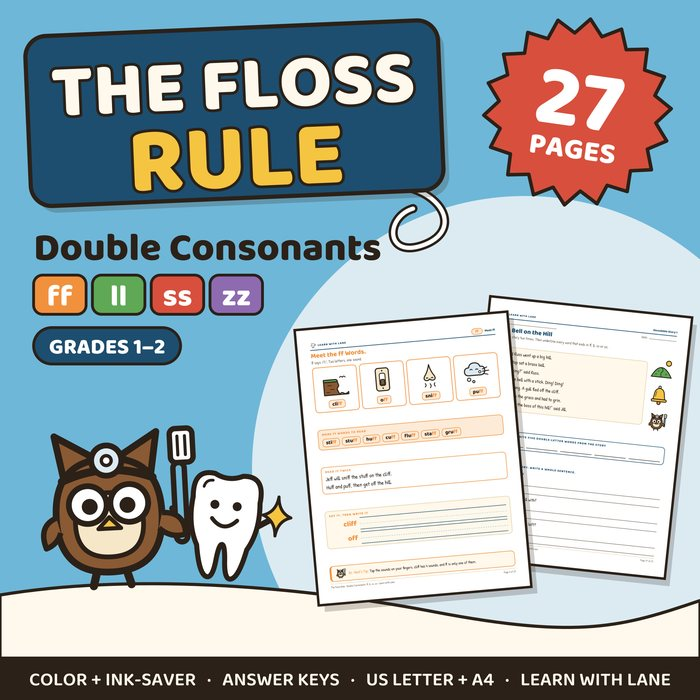
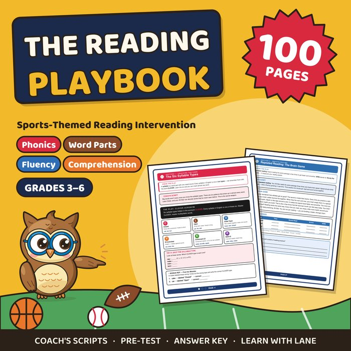
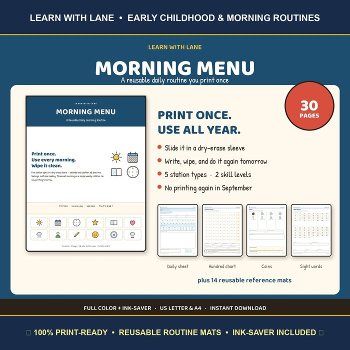

Free Phonics Worksheets You Can Print Today
Five free samplers from my phonics and reading intervention packs, from kindergarten word families to syllable types for older readers. Each one is real pages from the full pack, not a watered-down preview, and each teaches one pattern at a time.
The downloads are hosted on Teachers Pay Teachers. They are free; you only need a free TPT account to download.
Pick the One That Fits Your Reader

CVC Word Families: -at, -an, -ap
For a child who knows letter sounds and is starting to blend them into words.
- Build six words in each family
- Read them out loud
- Finish three sentences per page
- Answer key included
Full pack: 18 word families, 59 pages

Bossy R: R-Controlled Vowels
For a child who reads short-vowel words and is ready for ar, or, er, ir and ur.
- The Bossy R rule page, to keep on the desk
- Meet the ar family: picture words to read and trace
- ar practice with sound boxes
- Answer key included
Full pack: all five patterns, 29 pages, two decodable stories

The Floss Rule: Double Consonants
For a child who spells hil and mes: the sounds are right, the double is missing.
- The Floss Rule page: three questions to ask
- Meet the ff words: picture words and sentences
- ff practice with sound boxes
- Answer key included
Full pack: ff, ll, ss and zz, 27 pages, two decodable stories

Reading Intervention: Syllable Types, Prefixes, Fluency
For an older student who can read, but slowly, and stalls on long words.
- The six syllable types, with a practice page
- Prefixes dis- and pre-
- A timed repeated-reading passage with a chart
- Summarizing with SWBST
Full workbook: The Reading Playbook, 100 pages

Morning Menu: Calendar and 100 Chart
For a short daily routine a young child can do with a dry-erase marker.
- Print once and slide into a dry-erase pocket
- Calendar page
- 100 chart page
Full binder: 30 pages in color and ink-saver
How These Worksheets Teach
One pattern at a time
Each page practices a single spelling pattern. Patterns are mixed only after each one has been taught on its own, so a child is never guessing between things nobody has shown them yet.
Sounds first, then spelling
Sound boxes ask the child to write one sound in each box. Two letters that make one sound, like the ff in cliff, share a box.
Built for a parent, a tutor, or a teacher
Every pack has an answer key and a short guide. You do not need training in a reading program to use them.
What order should I use them in?
CVC word families come first, then the floss rule (ff, ll, ss, zz), then r-controlled vowels. Syllable types and prefixes are for students who already read one-syllable words well.
The Full Packs
Every pack is a print-and-go PDF with answer keys.
The Reading Playbook
100 pages of phonics, fluency and comprehension for older readers.
See the PlaybookWant help using them?
I'm David Lane, a certified teacher with 20+ years in the classroom. I tutor reading one-on-one, online and in person in the Texoma area. The first 30-minute lesson is free.